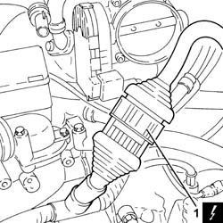
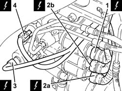
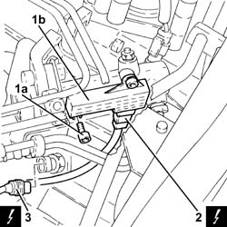
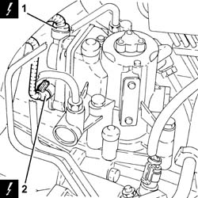

2127E94 wiring for manual gearbox hydraulic selection system on hydraulic selection unit r r or change
- Path
- Procedures > 21 GEARBOX > 2127 ELECTRO-HYDRAULIC SELECTION. GEARBOX EXTERNAL. CONTROLS > 2127E electric speed selection system > 2127E94 wiring for manual gearbox hydraulic selection system on hydraulic selection unit r r or change
- Kind
- repair procedure (removal / refitting; the operation number is the code)
- Applies to
- engines: 3.2 V6; all production periods
- Interactive page
- https://sloeber94.github.io/elrnDB-a156/en/#/3237981
Applies to: engines: 3.2 V6; all production periods; only with equipment: Smart gearbox
 Removing
Removing
 Refitting
RefittingProceed with removal 5530B10 battery - r+r .
Proceed with removal 5530B52 Battery DRIP TRAY/SUPPORT - R.R. .
Proceed with removal 1048A10 air cleaner filtering element - replace .
1. Disconnect the electrical connection for the manual gearbox electro-hydraulic selection system wiring on the selection unit.
 | Name | Connector |
|---|---|---|
1 | Transmission sensor junction |

Applies to: engines: 3.2 V6; all production periods; only with equipment: Smart gearbox
1. Disconnect the electrical connection from the clutch control solenoid.
| Name | Connector |
|---|---|---|
1 | Clutch control solenoid |
2. Disconnect electrical connections (2a) and (2b) from the even and odd gear engagement solenoids.
| Name | Connector |
|---|---|---|
2a | Solenoid 1 (gear engagement) |
| Name | Connector |
|---|---|---|
2b | Solenoid 2 (gear engagement) |
3. Disconnect the electrical connection of the gear selection solenoid.
| Name | Connector |
|---|---|---|
3 | Solenoid 3 (gear engagement) |
4. Disconnect the electrical connection from the electro-hydraulic gear selection hydraulic circuit pressure sensor.
| Name | Connector |
|---|---|---|
4 | Pressure sensor on transmission |

Applies to: engines: 3.2 V6; all production periods; only with equipment: Smart gearbox
1. Undo the bolts (1a) and move the clutch position sensor (1b) as necessary.
2. Disconnect the electrical connection from the clutch position sensor.
| Name | Connector |
|---|---|---|
2 | Clutch position potentiometer |
3. Disconnect the electrical connection from the electro-hydraulic gear selection input shaft speed sensor.
| Name | Connector |
|---|---|---|
3 | Transmission input speed sensor |

Applies to: engines: 3.2 V6; all production periods; only with equipment: Smart gearbox
1. Disconnect the electrical connection from the electro-hydraulic gear selection position sensor.
| Name | Connector |
|---|---|---|
1 | Speed selection potentiometer |
2. Disconnect the electrical connection from the electro-hydraulic gear selection position sensor.
| Name | Connector |
|---|---|---|
2 | Gear shift potentiometer |

Applies to: engines: 3.2 V6; all production periods; only with equipment: Smart gearbox
Remove the manual gearbox electrohydraulic selection system wiring on the hydraulic selection unit after releasing from the fastenings.
Applies to: engines: 3.2 V6; all production periods; only with equipment: Smart gearbox
Refitting
RemovingRefit the manual gearbox electrohydraulic selection system wiring on the hydraulic selection unit and secure.
Connect the electrical connection to the electro-hydraulic gear selection position sensor.
Connect the electrical connection to the electro-hydraulic gear selection position sensor.
Connect the electrical connection to the electro-hydraulic gear selection input shaft speed sensor.
Connect the electrical connection to the clutch position sensor.
Place the clutch position sensor back in its housing and fasten it using the bolts.
Connect the electrical connection to the electro-hydraulic gear selection hydraulic circuit pressure sensor.
Connect the electrical connection to the gear selection solenoid.
Connect the electrical connections of the even and odd gear engagement solenoids.
Connect the electrical connection to the clutch control solenoid.
Connect the electrical connection for the wiring for the manual gearbox electro-hydraulic selection system to the selection unit.
Proceed with refitting 1048A10 air cleaner filtering element - replace .
Proceed with refitting 5530B52 Battery DRIP TRAY/SUPPORT - R.R. .
Proceed with refitting 5530B10 battery - r+r .
Topics linked from this page (13)
- 1048A10 air cleaner filtering element - replace
- 5530B10 battery - r+r
- 5530B52 Battery DRIP TRAY/SUPPORT - R.R.
- D79 Transmission sensor junction
- K68 Speed selection potentiometer
- K69 Gear shift potentiometer
- K78 Transmission input speed sensor
- K95 Clutch position potentiometer
- K96 Pressure sensor on transmission
- L51 Solenoid 1 (gear engagement)
- L52 Solenoid 2 (gear engagement)
- L53 Solenoid 3 (gear engagement)
- L56 Clutch control solenoid ( AUTOMATIC TRANSMISSION )